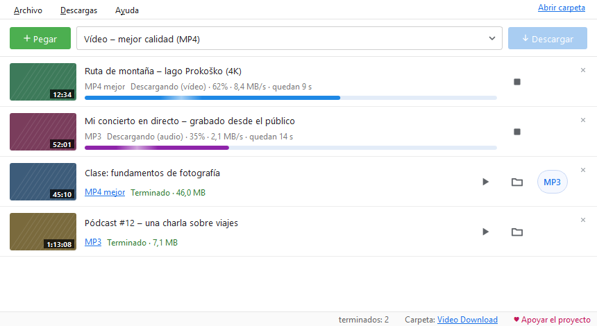

Vídeo y audio.
Con un clic.
Una aplicación gratuita para Windows y Mac: MP4 en calidad completa o MP3, directamente desde el navegador o desde un enlace copiado.
- Sin cuenta
- Sin límite diario
- Tus enlaces no nos llegan
La aplicación está pensada para tus propios vídeos, contenido para el que tienes permiso del autor y contenido con licencia libre. Al descargar aceptas las Condiciones de uso. El contenido protegido con DRM no se descarga.
Pruébalo: pulsa + Pegar.
Todo lo que necesitas,
nada que sobre.
Una ventana sencilla y, por debajo, todo lo que esperas de un buen descargador.
MP4 hasta la mejor calidad
La mejor, 1080p, 720p o 480p. Imagen y sonido se unen en un MP4 (H.264/AAC si el sitio lo ofrece) que se reproduce en la mayoría de los dispositivos.

Solo audio: MP3 o M4A
Para clases, pódcasts y música. Un MP4 terminado se convierte en MP3 con un botón.
Copia un enlace y listo
La aplicación detecta un enlace copiado y lo añade a la cola.
Listas, varias a la vez
Listas de reproducción completas, hasta 4 descargas a la vez y reintento automático si se corta la conexión.
Fragmentos, subtítulos, portada
Solo una parte del vídeo, subtítulos en el MP4 y la miniatura como portada del archivo.
Tema claro y oscuro
O igual que el sistema. Progreso en la barra de tareas y un aviso al final.
Siempre al día y seguro
La aplicación busca nuevas versiones por sí sola, actualiza la parte que lee los sitios web sin reinstalar. En Windows y en Mac instala solo actualizaciones firmadas digitalmente por nosotros.
Descarga lo que se está reproduciendo.
Reproduce un vídeo, pulsa el icono y listo. O clic derecho en cualquier enlace o vídeo. La aplicación se abre sola si no está abierta.
- Firefox: un clic, firmada por Mozilla, se actualiza sola
- Edge y Chrome: se carga una vez desde la carpeta de la aplicación
- Las emisiones en directo y el vídeo con DRM no se descargan
Tu primer archivo en pocos minutos.
Instala una vez y luego solo copia enlaces.
Instalar
No necesita administrador y no añade nada más a tu ordenador.
Añadir un enlace
Copia un enlace, pulsa «Pegar» o usa la extensión.
Descargar
MP4 o MP3 y luego «Descargar». El archivo te espera en la carpeta Video Download.
Primer inicio, paso a paso.
La aplicación aún no tiene un certificado de pago, así que tu sistema pregunta una vez. Las actualizaciones desde la aplicación no preguntan.
Windows puede mostrar «Windows protegió su PC». Comprueba que el archivo viene de este sitio y pulsa Más información y luego Ejecutar de todas formas.
Beta Novedad: Video Download para Mac. Para Mac con chip de Apple (M1 o posterior) y macOS 13 o posterior. Funciona, pero aún lo han probado pocas personas: avísanos si algo no funciona.
La versión para Mac aún no está firmada por Apple, así que el primer inicio requiere unos clics más:
- Abre el .dmg descargado y arrastra Video Download a Aplicaciones.
- Abre la app. macOS dice que no puede verificarla: cierra el aviso (no «Trasladar a la papelera»).
- Ve a Ajustes del Sistema → Privacidad y seguridad, desplázate hacia abajo, pulsa Abrir igualmente e introduce la contraseña del Mac.
- Vuelve a abrir la app y confirma Abrir. Solo hace falta una vez.
Beta Novedad: Video Download para Android. Para móviles con Android 10 o posterior. Comparte un vídeo desde cualquier app y elige la calidad. Funciona, pero aún lo han probado pocas personas: avisa si algo no funciona.
La app no está en Google Play, así que la primera instalación requiere unos toques más:
- Abre el archivo descargado (Descargas o la lista de descargas del navegador).
- Si Android lo pide, permite instalar apps desde tu navegador: Ajustes → Permitir de esta fuente.
- En móviles Samsung, desactiva Auto Blocker para la instalación (Ajustes → Seguridad y privacidad).
- Si Google Play Protect avisa de una app desconocida, pulsa Más detalles → Instalar de todas formas.
- Las nuevas versiones se instalan desde la propia app: Ajustes → Buscar actualizaciones.
¿Usas Obtainium? Instala la app directamente desde GitHub y la mantiene actualizada. Añadir a Obtainium →
Mejor cada semana.
La misma lista que en la aplicación (Ayuda → Novedades).
0.9.10 5.10.2026
- Los capítulos del vídeo (p. ej. «0:00 Intro») ahora van en los archivos MP4 y MP3, y el reproductor los muestra en la barra; se puede desactivar en Ajustes.
- Nuevo en Ajustes: recortar anuncios de patrocinadores (SponsorBlock) quita del vídeo los anuncios de patrocinadores, la autopromoción y el «dale like y suscríbete». Desactivado hasta que lo actives.
- Android: el MP3 ahora funciona en sitios sin audio separado, como Instagram (se crea a partir del vídeo); el botón ♪ y la pestaña Audio ya no aparecen desactivados.
- Android: la web tiene también un botón «Añadir a Obtainium» para instalar y actualizar directamente desde GitHub.
0.9.9 4.10.2026
- Nueva ventana Ajustes (engranaje junto a «Descargar», o Archivo → Ajustes, Ctrl+,): todas las opciones en un solo lugar, por grupos.
- Pestañas sobre la lista (Todo, En curso, En espera, Terminados, Fallidos) y etiquetas en los archivos terminados: formato, resolución real y tamaño.
- Cuando un sitio cambia algo, Ayuda → Actualizar el lector de sitios ofrece también la versión nightly de yt-dlp con los arreglos más recientes; también se ha corregido la actualización automática de yt-dlp.
- Ahora puedes aportar con tarjeta, Apple Pay o Google Pay, o a través de Ko-fi, sin cuenta de PayPal.
- La barra de progreso ya no se queda en una fila que terminó con la ventana oculta; la pantalla vacía menciona también la extensión del navegador.
0.9.8 3.10.2026
- Descargas → Control parental, opcionalmente protegido con PIN.
- Ayuda → Informar de un problema o sugerencia: abre un correo al autor, con la versión del programa.
- La versión de Mac ahora se actualiza sola como la de Windows: descarga la nueva versión, comprueba nuestra firma digital y sustituye el programa (a partir de la próxima versión).
- Instalador más pequeño (unos 117 MB en lugar de 130 MB), sin partes que el programa no usa.
- Un mensaje más claro cuando un sitio pide iniciar sesión para mostrar una publicación.
La aplicación es gratuita.
Sin anuncios, sin rastreo y sin versión «premium». Si te resulta útil, puedes apoyar su desarrollo de forma voluntaria. Una contribución no desbloquea nada: la aplicación es igual para todos.
 Escanéalo con la cámara del móvil
Escanéalo con la cámara del móvil¿Preguntas?
Si algo no funciona: en la aplicación usa Ayuda → Guardar un informe del problema y luego informa del problema. Los informes son públicos: no incluyas contraseñas ni datos personales.
De repente un vídeo no se descarga.
Los sitios web cambian a menudo. Ayuda → Actualizar el lector de sitios (yt-dlp) y vuelve a intentarlo. Si sigue sin funcionar, la aplicación ofrece la versión nightly de yt-dlp con los arreglos más recientes.
¿Por qué no se descargan las emisiones en directo?
Una emisión en directo no tiene fin, así que la descarga nunca terminaría. Descárgala cuando acabe y se publique la grabación.
¿Qué envía la aplicación a internet?
Solo lo necesario: el enlace que descargas va a ese sitio web y la búsqueda de actualizaciones, a GitHub y PyPI. A SponsorBlock solo se consulta si lo activas, y solo con 4 caracteres de un ID de vídeo cifrado. Sin cuentas, estadísticas ni rastreo.
¿Es segura?
El código es público en GitHub, cada instalador tiene una suma SHA-256 y la aplicación solo instala actualizaciones firmadas digitalmente por nosotros, en Windows, Mac y Android.